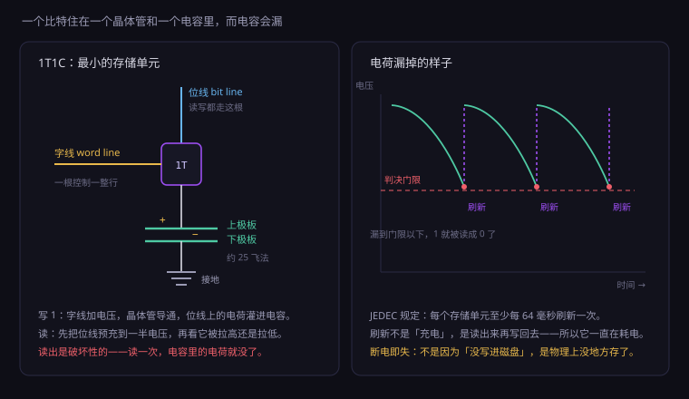
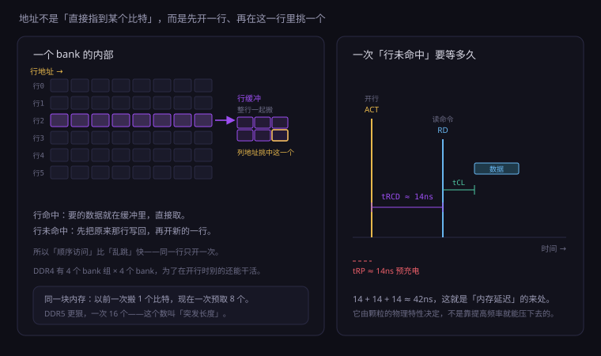
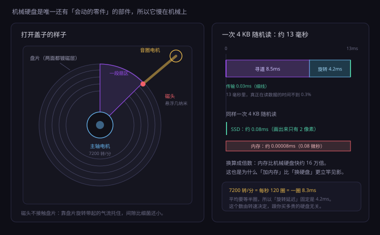
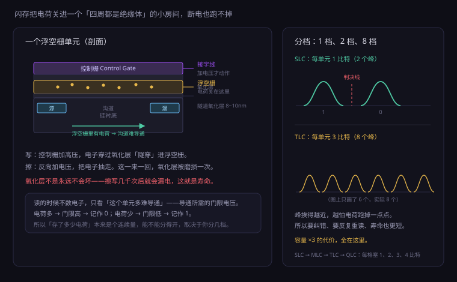
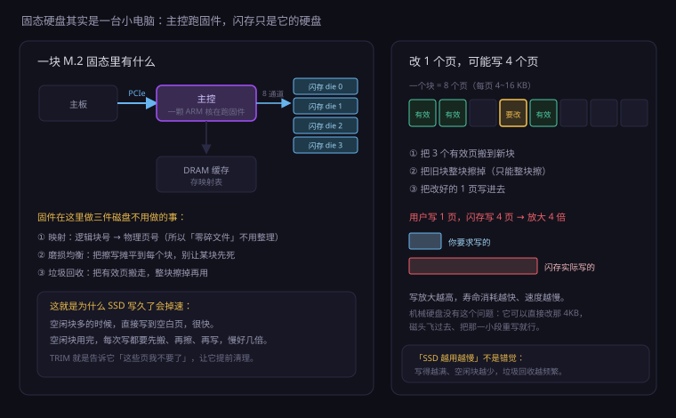

约 1.2 万字 · 5 张图 · 读完你能说清一个比特到底存在哪、 为什么内存断电就忘、为什么固态硬盘越用越慢
这个比喻你一定听过：内存是桌面，硬盘是柜子。 桌上摊得开、拿得快，但桌子一收拾就没了；柜子里塞得下、放得久，但每次都要开柜门、翻找、搬出来。
比喻好用的地方是「速度差」，但它漏掉了两件更要紧的事。这两件事，才是后面文件系统、数据库、 甚至「固态硬盘为什么越用越慢」的真正源头。
内存的最小访问单位是一个字节。程序要把某个变量从 100 改成 101， CPU 发一条写指令，指定地址，写 1 个字节，完事。周围那些字节一动不动。
硬盘不是这样。机械硬盘的最小读写单位是扇区，传统 512 字节，现在普遍 4096 字节； 固态硬盘的最小读写单位是页，通常 4 KB 到 16 KB，而擦除的单位更大，是一整个块， 几百页到上千页放在一起。
这意味着：你想改一个字节，硬盘必须把整块读出来、改掉那一个字节、再整块写回去。 固态硬盘更麻烦——它连「写回去」都不能直接做，必须先擦掉整块。 所以后面你会看到「写放大」这个词：用户写 1 页，闪存实际写 4 页。
内存的地址是 CPU 直接给出的。程序说「读 0x7ffd1234 这个地址的 8 个字节」， 内存条就把这 8 个字节送回来——它不需要知道这 8 个字节属于哪个变量、哪个文件、哪个程序。 对内存来说，所有地址都是一样的，它只管搬运。
硬盘不是。硬盘只认逻辑块号（LBA，Logical Block Address）： 「把第 12345678 号块读出来」。它完全不知道这个块属于哪个文件。 是文件系统在中间做翻译：「用户要读 D:\书\第一章.txt 的第 300 字节」→「那是 3 号分区的第 812 号块」。
这一层翻译你要记住，因为后面整章「文件与格式」都在讲它： 硬盘上没有「文件」这种东西，只有编号的块。 文件名、目录、权限、修改时间，全是文件系统编出来的一层皮。
三种存储，三种「记住」的物理方式，这一点决定了它们的一切脾气：
| 介质 | 靠什么记住 | 断电后 | 为什么 |
|---|---|---|---|
| DRAM（内存） | 电容里的电荷 | 全丢 | 电容会漏电，几十毫秒就漏到读不出来 |
| NAND（固态硬盘） | 关在绝缘层里的电荷 | 还在 | 四周都是氧化层，电荷出不去 |
| 磁盘（机械硬盘） | 磁层的磁化方向 | 还在 | 磁化不需要能量维持 |
注意第一行和第三行的对比：都是「电荷」和「磁」，但一个会漏、一个不会。 内存的电容是「敞开的」，必须不断补;硬盘的磁畴是「稳定的」，写进去就一直在。 这不是设计者偷懒，是两种完全不同的物理现象。
拿起一条内存，你看到的是三样东西：一排金色的触点、几块黑色的方块、一个塑料缺口。 每一处都有明确的用途。
台式机的 DDR4 和 DDR5 都是 288 个引脚（笔记本的 SO-DIMM 是 260 个）。 这些引脚里，真正传数据的只有 64 根（单通道）或 72 根（带 ECC）， 其余大部分是供电和地——和主板那节讲的 CPU 插槽是同一个道理： 电压低，电流就大，只能靠堆针脚并联。
金手指为什么要镀金？不是因为「高级」，是因为铜会氧化，氧化层让接触电阻变大， 高频信号过不去。金的化学性质稳定，插拔几百次也不长氧化膜。 所以哪怕最便宜的内存条，触点也是镀金的（厚度不同而已）。
一条 16 GB 的内存，上面通常有 8 颗或 16 颗 DRAM 芯片，每颗 2 GB 或 1 GB。 这些颗粒来自三星、SK 海力士、美光，以及国内的长鑫。 颗粒是内存条上唯一真正存数据的东西，其余都是配角。
颗粒的位宽有两种：x8 和 x16。8 颗 x8 的颗粒并排，正好凑成 64 位，这叫一个 rank； 16 颗 x8 就是两个 rank。这就是「单面 / 双面」的来历——不是因为两面好看， 是因为一面放不下 16 颗。
双面（双 rank）会带来一个细节：内存控制器一次只能在同一个 rank 上操作， 切 rank 要额外花几个时钟。所以双 rank 的条子在某些场景下比单 rank 略慢一点点， 但容量翻倍、并行度更好。这是取舍，不是优劣。
那个缺口不是装饰。它在 PCB 上的位置由内存代数决定： DDR3、DDR4、DDR5 的缺口位置各不相同，插错代数是物理上插不进去的。 这是最便宜、最可靠的防错手段——比任何电路保护都可靠，因为它不需要通电。
DDR5 还做了一件大事：把供电管理芯片（PMIC）从主板挪到了内存条上。 所以 DDR5 条子比 DDR4 更热、更贵，也更容易因为散热不好而降频。 这也是为什么现在的中高端 DDR5 都带金属马甲——不是为了好看。
内存条边上有一颗很小的芯片，叫 SPD（Serial Presence Detect），本质是一块 EEPROM。 里面存着这条内存的「身份证」：容量、颗粒类型、支持的各档频率与时序、厂商、序列号。
开机时，主板先读 SPD，才知道「插进来的是 DDR5-6000 CL30，还是 DDR5-4800 CL40」。 读不到，就按最保守的参数来，甚至点不亮。
这是本节最硬的一块，也是整本书里第一次真正碰到「物理层面的一个比特」。 看懂这一页，后面所有关于内存的怪现象都能自己推出来。

左边那张图就是全部。一个比特只需要两样东西：
这个结构叫 1T1C（1 Transistor, 1 Capacitor）。 整个内存条上有几百亿个这样的单元，每个单元负责一个比特。
现代 DRAM 的存储电容大约是 25 飞法（fF，1 飞法 = 10⁻¹⁵ 法）。 充电到 1.2 伏，电量 Q = C × U ≈ 30 飞库仑。 一个电子带 1.6 × 10⁻¹⁹ 库仑，除一下：
30 × 10⁻¹⁵ ÷ 1.6 × 10⁻¹⁹ ≈ 190,000
一个比特，就是这十九万个电子在或者不在。 这个数字值得停一下：它不是「有电/没电」这么粗，而是一个可以被数出来的数量。 所以内存怕干扰、怕辐射——随便一点点电荷泄漏或注入，都可能改变判决结果。
这是 1T1C 最反直觉的地方。读的时候，电容要把自己的电荷分给位线—— 位线本身也有电容，通常比存储电容大好几倍。 电荷一分摊，位线上的电压变化只有几十毫伏。
几十毫伏太小了，必须先经过灵敏放大器（sense amplifier）放大成完整的 0 或 1。 而放大的过程，等于把电容里的电荷彻底放掉了。 所以读是破坏性的：每次读完，必须紧接着把值写回去。
到这里可以列一张表了。这张表把「缓存、内存、硬盘」这三样一直被混着说的东西分开：
| SRAM（缓存） | DRAM（内存） | NAND（固态硬盘） | |
|---|---|---|---|
| 每个比特的元件 | 6 个晶体管 | 1 个晶体管 + 1 个电容 | 1 个浮空栅单元 |
| 典型延迟 | 约 1 纳秒 | 约 60 纳秒 | 约 20 微秒 |
| 要刷新吗 | 不用 | 要，每 64 毫秒 | 不用 |
| 断电后 | 丢 | 丢 | 还在 |
| 擦写寿命 | 近乎无限 | 近乎无限 | 有限，几千次 |
| 用在哪 | L1 / L2 / L3 | 主存 | 硬盘、U 盘、手机存储 |
看第三行：只有内存需要刷新。这不是内存「落后」， 而是它选择了「用最少的元件存最多的比特」，代价就得靠刷新来还。 缓存用 6 倍面积换来了「不用刷新、永远在线」，硬盘用绝缘层换来了「断电不忘」。 三种存储器，是三种不同的取舍，不是三个档次。
电容不是理想的。它有两个漏电通道：晶体管关断时仍有微弱的漏电流，绝缘层也不是绝对绝缘。 电荷一点点跑掉，电压就一点点下降。
右图那条锯齿就是这件事：从满电开始，电压一路下滑，滑到判决门限以下， 这一位就再也读不成 1 了。
JEDEC 标准规定：DRAM 里的每一个存储单元，至少每 64 毫秒要刷新一次。 这不是厂商的良心，是标准——所有内存条都得满足，否则不兼容。
把这个数字摊到行上：一个 bank 有 8192 行（老规格），64ms ÷ 8192 ≈ 7.8 微秒。 也就是说，内存控制器每隔 7.8 微秒就要发一条刷新命令， 像一个永远停不下来的闹钟。
这是很多人误解的地方。刷新不是给电容补电，而是把整行读进灵敏放大器， 放大后再原样写回。因为读是破坏性的，写回是必须的补偿。
这带来两个后果：
现在你知道一个比特存在哪了。接下来的问题是： CPU 给出一个地址，比如 0x7ffd1234，内存条怎么在几百亿个单元里找到它？

DRAM 内部是一个二维阵列：行和列。 一个地址进来，先拆成行地址和列地址，分两次送进去：
为什么要这么麻烦？因为物理上，一整行的存储单元是连在同一条字线上的， 加电压就全部导通，没法只开一个。所以「整行搬出来」不是选择，是物理必然。
这里出现了内存性能最重要的一个区分：
所以程序顺序遍历一个数组，比随机跳着读快得多——因为连续地址大概率在同一行里。 这不是「缓存友好」四个字能概括的，它下面压着一层物理事实。
如果一个内存只有一组阵列，那每次开行，整块内存都得等着。所以实际的内存被切成很多个 bank：DDR4 是 4 个 bank 组 × 4 个 bank = 16 个， 每个 bank 有自己的行缓冲。
这样，当 A bank 在开行的时候，B bank 可以同时在传数据。 内存控制器会把地址打散到不同 bank 上，让它们轮流干活。 「bank 交错」这个词说的就是这件事：把连续地址分到不同 bank，让并行度上来。
现在可以算一算那个「几十纳秒」是怎么来的了。它由三个时间拼成：
| 参数 | 含义 | 典型值 |
|---|---|---|
| tRCD | 开行命令到数据可用（Row to Column Delay） | 约 14ns |
| tCL | 列地址到数据出来（CAS Latency） | 约 14ns |
| tRP | 预充电，关掉上一行 | 约 14ns |
行未命中的时候，三个都要走一遍：14 + 14 + 14 ≈ 42 纳秒。 再加上 CPU 到内存控制器的传输、排队，一次真正的内存访问通常是 60 到 100 纳秒。
这里有个特别容易踩的坑。内存标称的 3200、6000 是数据传输率（MT/s）， 不是时钟频率，更不是「每秒能做多少次随机访问」。
时序参数 CL 的单位是时钟周期，不是纳秒。换算公式是：
实际延迟(ns) = CL × 2000 ÷ 数据率(MT/s)
拿两组真实参数代进去：
看第三行：同样是 6000，CL40 的条子延迟和 3200 CL22 几乎一样。 频率翻倍带来的收益，一大半被更松的时序吃掉了。 高频条真正值钱的地方是带宽（下一节讲），不是「点一下反应更快」。
延迟是「一次要等多久」，带宽是「一秒钟能搬多少」。两件事，经常被混为一谈。
DDR 全称 Double Data Rate——双倍数据率。 传统的 SDR 内存只在时钟的上升沿传一次数据，DDR 在上升沿和下降沿各传一次。 所以一个 1600 MHz 的时钟，能跑出 3200 MT/s 的数据率。
这就是为什么任务管理器里显示「3200 MHz」，其实那是 MT/s，真实时钟是 1600 MHz。 厂商这么标已经几十年了，改不了，你只要知道这个换算就行。
一根内存通道是 64 位宽，也就是一次搬 8 个字节。 带宽就是这么算出来的：
3200 MT/s × 8 字节 = 25.6 GB/s（单通道）
双通道就是两条并排，51.2 GB/s。DDR5-4800 单条能到 38.4 GB/s， 因为它把一条 DIMM 拆成了两个 32 位的子通道—— 所以 DDR5 的「一条」在物理上已经相当于 DDR4 的「两条」了。 这也是为什么 DDR5 平台对「插满四条」更不友好：四个子通道抢同一批时序资源。
主板上的四条内存插槽通常是 A1、A2、B1、B2，颜色交替。 两条内存要插在不同颜色的同一组（一般是 A2 和 B2），才组成双通道。 插在 A1、A2 上，还是单通道——带宽直接减半。
核显是最直接的受益者——它没有独立显存，直接用内存当显存，带宽减半就是帧数减半。 这也是为什么核显机器一定要双通道，而且最好是高频。 独立显卡有自己的显存，对内存带宽不敏感，但对容量敏感（贴图要先进内存再进显存）。
还有一个常被忽略的事实：内存控制器不在主板上，在 CPU 里。 2008 年 Intel 的 Nehalem 架构把北桥吞进 CPU 之后，内存就变成「直连」了。 这也是为什么换 CPU 有时要换内存——控制器支持到哪一代、哪个频率，是 CPU 说了算。
内存控制器和内存之间靠时钟同步。这里出现了三个时钟：
当内存频率不太高时，三者可以 1:1:1 跑，延迟最低。 频率再往上，控制器跟不上，只能降成 1:2（UCLK 是 MCLK 的一半）， 这时带宽还在涨，但延迟会突然变差。
前面说过，一个比特只有十九万个电子。这么少的电荷，是会被打扰的。
最常见的打扰来自中子——宇宙射线打进大气层产生的次级粒子。 它穿过内存芯片时，可能刚好把某个电容里的电荷撞掉一部分，或者撞出几个电子。 这一位就从 1 变成 0，或者从 0 变成 1。整个过程没有任何征兆，也没人知道。
这类错误叫软错误（soft error）：不是芯片坏了，是内容被改了，重写一次就好。 概率不高，但不是零——一台普通电脑跑几个月，碰上一两次是正常的。 概率随容量上升、随海拔上升（高原地区更明显）、随温度上升。
ECC 内存的做法很朴素：64 位数据，额外再存 8 位校验，一共 72 位。 这就是为什么 ECC 内存条上颗粒数是 9 的倍数（8 颗数据 + 1 颗校验）。
这 8 位能做的事叫 SECDED：Single Error Correction, Double Error Detection。 发现并纠正 1 位错误，同时检测出 2 位错误（但纠正不了）。 纠正的过程在内存控制器里完成，对程序完全透明——程序读到的永远是「已经修好」的值。
三个原因：贵一点（多 12.5% 的颗粒）、CPU 和主板要支持、 以及消费级场景「错了大不了重启」。 但服务器不行——一台机器跑着几百个虚拟机，一次静默错误可能让数据库某个页悄悄写错， 几天后你才发现备份也是错的。
现在转到柜子这边。市面上有三种「硬盘」，但严格说，这不是三种技术， 而是两种存储介质 × 两种接口：
| 类型 | 介质 | 接口 | 最小读写单位 | 4K 随机读延迟 | 顺序读 |
|---|---|---|---|---|---|
| 机械硬盘 HDD | 磁 | SATA | 扇区 4KB | 约 13 毫秒 | 150~260 MB/s |
| SATA 固态 | 闪存 | SATA | 页 4~16KB | 约 0.1 毫秒 | 约 550 MB/s |
| NVMe 固态 | 闪存 | PCIe | 页 4~16KB | 约 0.02~0.08 毫秒 | 3000~14000 MB/s |
看清楚这张表里的两个跳跃： 从磁到闪存，延迟掉了一百多倍； 从 SATA 到 PCIe，又掉了五倍左右。 第二个跳跃跟「颗粒好不好」没关系，纯粹是接口和协议的事，第 13 小节专门讲。
因为它在一个维度上永远赢：每 GB 的价格。 同样花一千块，固态能买 2TB，机械能买 12TB 以上。 而且冷数据放机械盘，断电放五年还能读；闪存放五年不通电，电荷会慢慢漏掉， 有真实的「放久了读不出来」的案例。
所以现在的标准配置是「固态装系统和程序，机械存电影和备份」。 这不是过渡方案，是各自干各自擅长的事。

机械硬盘里只有一件事在「读」，其余都在「找」：
寻道是机械动作，要加速、要减速、要稳定下来，平均 8 到 12 毫秒。 这是整块硬盘最贵的一段时间，比读数据本身贵几百倍。
这是机械硬盘最不可思议的一个数字。磁头不接触盘片，靠盘片旋转带起的气流托着飞。 间隙只有几纳米——如果把磁头放大到一架波音 747 那么大， 它离地面的高度大约只有 3 毫米。
一粒灰尘、一次震动、一次突然断电（磁头要紧急归位），都可能让磁头蹭到盘片。 蹭一下就是一片划痕，那一片的数据就没了。这就是为什么机械硬盘怕摔、怕移动中通电。
7200 转/分 = 每秒 120 圈 = 一圈 8.33 毫秒。 平均要等半圈才转到磁头下面，所以旋转延迟固定是 4.17 毫秒， 这个数跟你买多贵的硬盘无关，只由转速决定。
加上平均 8.5 毫秒的寻道，再加不到 0.05 毫秒的传输： 一次 4 KB 随机读大约 13 毫秒，折算下来每秒只能做 75 次左右（75 IOPS）。 同样的操作，固态硬盘能做成千上万次。
老硬盘的扇区是 512 字节。后来厂商发现，扇区做大一点更省事——同样容量， 扇区头尾的校验和间隔开销能少一大截。于是物理扇区变成了 4096 字节。
但操作系统和分区工具都是按 512 字节写的，直接改会全乱。于是有了两种过渡方案：
所谓「4K 对齐」，就是让分区的起始位置落在 4096 的整数倍上， 这样每次写都不会跨扇区。Windows 7 之后默认按 1MB 对齐，所以现在基本不用管； 只有很老的系统或者手动分区才会踩这个坑。
机械硬盘提升容量有两条路：多塞盘片（充氦气就是为了塞更多），或者提高面密度。 还有第三条歪路：SMR（叠瓦式）。
叠瓦的做法是把磁道像屋顶瓦片一样重叠一部分，同样的面积能多写 25% 左右。 代价是：改一条磁道，会连带影响旁边那条。 所以写入时要先把整片「瓦片区」读出来、改、再整片写回——这叫写放大， 随机写入速度可能掉到几十 MB/s，比 U 盘还慢。
厂商不会在包装上写「SMR」，只会写容量和转速。 买之前一定要查具体型号的规格书，NAS 和监控这种持续写入的场景尤其要避开。

闪存的单元结构和内存其实很像：也有一个「存电荷的地方」。 区别在于，内存的电容是敞开的（所以会漏）， 闪存的电荷被关在一个叫浮空栅（floating gate）的多晶硅层里， 上下左右全是氧化层——绝缘体。
电荷进去了出不来，所以断电也在。这就是「非易失」的物理来源。
氧化层是绝缘的，正常情况电荷过不去。要让电子穿过去，只有一个办法： 加足够高的电压，让电子「隧穿」过去（量子隧穿效应）。
这个「穿过去」的动作不是无损的。每穿一次，氧化层就被撞出一些缺陷， 积累到一定程度就会漏电，单元就废了。这就是擦写寿命的物理来源， 也是为什么 SSD 的寿命写在规格书上，而机械硬盘不写。
这是理解 TLC、QLC 的关键。读取时，芯片不去数浮空栅里有多少电子， 而是问一个问题：这个单元要加多高的电压才能导通？
电荷越多，门限电压越高。所以「存了多少电荷」被翻译成了「导通有多难」。 本来这是个连续量，但我们可以人为划分几档：
| 类型 | 每单元比特 | 档数 | 擦写寿命（典型） | 用在哪 |
|---|---|---|---|---|
| SLC | 1 | 2 | 5 万~10 万次 | 企业级、缓存 |
| MLC | 2 | 4 | 3000~10000 次 | 早期高端消费盘 |
| TLC | 3 | 8 | 1000~3000 次 | 现在的主流 |
| QLC | 4 | 16 | 几百次 | 大容量廉价盘 |
档数越多，相邻两档的间隔越小，越怕电荷跑掉一点点。 所以 TLC 要更强的纠错、要反复重读、寿命也更短—— 「容量 ×3」的代价全在这里。
最早的闪存和芯片一样，是平面铺开的：缩小线宽，同样的面积塞更多单元。 缩到十几纳米时撞墙了——单元挨得太近，浮空栅里的电荷会互相干扰， 而且漏电速度随氧化层变薄急剧恶化，数据存不住了。
解决办法不是继续缩小，而是往上盖楼：把单元一排排垂直堆叠起来， 打一个贯穿所有层的通道孔，孔壁上做存储层。这就是 3D NAND。 层数从 32 层一路涨到 176 层、232 层，现在已经在冲 300 层以上。
所以你看到「232 层 TLC」这种参数时，它说的不是精度，是盖了几层楼。 层数越多，同样面积容量越大，成本越低——这是闪存十几年降价的主因。
闪存的读写单位是页（4~16 KB），擦除单位是块（几百页，通常几百 KB 到几 MB）。 而且有一条铁律：
只能往「已经擦干净的页」里写。想改一个已经写过字的页，必须先擦掉整块。
这条铁律直接催生出了固态硬盘里最复杂的一层软件：FTL。下一节讲。

一块固态硬盘上有三样主要的东西：
所以你电脑里的「硬盘」其实是一台有 CPU、有内存、有操作系统的设备， 它通过 PCIe 跟你说话，自己内部再管一堆闪存芯片。
操作系统仍然按逻辑块号（LBA）来读写，就像对机械硬盘一样。 主控里有一层叫 FTL（Flash Translation Layer）的软件， 把「第 812 号逻辑块」翻译成「第 3 颗芯片、第 128 块、第 7 页」。
关键是：这个映射是可以随时改的。 你要改第 812 号块，固件不去原地改，而是找一个空页写进去， 然后把映射表里的指针改一下。旧页标记为「无效」，等着以后被回收。
这就是为什么固态硬盘不需要整理碎片——文件在物理上本来就散着，反正都靠查表。
算一笔账。一块 1TB 的盘，页大小按 4KB 算：
1 TB ÷ 4 KB ≈ 2.68 亿个页
每个页要在映射表里占一条记录，通常 4 字节。2.68 亿 × 4 字节 ≈ 1 GB。
所以一块 1TB 的高端固态上那颗 1GB 的 DRAM，不是「缓存文件内容」用的， 是专门用来装这张映射表的。表在内存里，查一次几微秒； 表在闪存里，查一次要走一次闪存读——延迟差几十倍。
这就是 DRAM-less 盘的真相：省掉那颗 DRAM，把映射表放在闪存里， 靠主控里一小块 SRAM 缓存热点部分（叫 HMB，还会借你系统内存一点点）。 顺序读写看不出差别，随机读写会明显掉队。
问题来了：空页会用完。这时候固件要做「垃圾回收」：
于是出现了一个尴尬的数字：用户只写了 1 页，闪存实际写了 4 页（搬 3 页 + 写 1 页）。 这个比值叫写放大（Write Amplification）。 写放大越高，速度越慢，寿命消耗越快。
一块标称 1TB 的固态，颗粒总量其实比 1TB 多一点，多出来的部分叫 OP（Over-Provisioning，预留空间）。消费级一般留 7% 左右， 企业级能留到 28%。
这块空间用户看不见，也访问不到，专门留给垃圾回收当「周转仓库」。 预留越多，回收越从容，写放大越低，寿命越长，持续写入越稳。 企业盘贵，很大一部分贵在这里。
由此可以推出一个实用建议：别把固态用到 100%。 留 10%~20% 不用，等于自己给自己加了一块 OP， 比任何「优化软件」都有效。
| 现象 | 原因 |
|---|---|
| 新盘测速 7000MB/s，装了一半变 2000MB/s | SLC 缓存用完了，开始直写 TLC |
| 持续写入几十 GB 后断崖式下降 | 缓存写满 + 垃圾回收跟不上 |
| 盘快满了随机写入卡顿 | 空闲块不足，每次写都要先搬再擦 |
所谓 SLC 缓存，是把 TLC 的一部分空间临时当成 SLC 来用—— 只存 1 比特，写得快。空盘时缓存很大（可以借几百 GB）， 写满之后缓存缩小，速度就回到 TLC 的真实水平。 厂商标的「7000MB/s」是缓存内的速度，不是持续速度。
操作系统删文件时，只是把目录项划掉，它并不知道硬盘上那些页已经作废。 于是固件会以为那些页还有效，垃圾回收时白白搬一遍。
TRIM 就是一条命令：「这些块我不要了，你可以提前清掉」。
Windows 的「优化驱动器」、Linux 的 fstrim，做的就是发这条命令。
它不是「整理碎片」，是「通知作废」。
两条固态硬盘，颗粒一样、主控差不多，一个跑 550MB/s，一个跑 7000MB/s。 差在哪？差在「怎么跟 CPU 说话」。
SATA 3.0 的物理层是 6 Gb/s，但用了 8b/10b 编码（每 10 位里只有 8 位是数据）， 实际能到 600 MB/s，刨掉开销约 550 MB/s。 这个数字十几年没变过，因为 SATA 标准就停在这了。
更麻烦的是上层的 AHCI 协议。它是 2004 年为机械硬盘设计的， 核心假设是「硬盘很慢，一次只能干一件事」： 一个队列，最多 32 条命令，而且每条命令要经过一堆寄存器读写。
对机械硬盘这没问题——它本来一次只能处理一个请求。 对闪存就不行了：闪存内部有很多颗芯片、很多个通道，天生能并行几十上百个请求， 结果被一条 32 深的队列卡住。
NVMe 是重新设计的协议，三个关键改动：
结果就是延迟从约 100 微秒降到 20 微秒上下，而且队列深了，随机 IOPS 能到几十万。 这才是 NVMe 真正的价值——不是顺序读快，是并发能力强。
因为跑分软件会同时发很多请求。同样是 4K 随机读：
| 并发请求数（队列深度） | NVMe 固态的 IOPS | 折算单次延迟 |
|---|---|---|
| 1 | 约 1.5 万 | 约 65 微秒 |
| 32 | 约 40 万 | 约 80 微秒（排队） |
| 128 | 约 60 万 | 约 200 微秒（排队） |
注意第二列和第三列的对比：IOPS 涨了 40 倍，但单次延迟几乎没变。 它靠的不是「一次更快」，而是「同时做很多件」。 这就像超市收银：一个收银员再快也有限，开十个通道吞吐量就上去了，但每个人等待的时间没减少。
这也是为什么家用电脑日常感觉不出两块高端固态的差别—— 你的日常操作队列深度基本是 1 到 4，跑不到那个并发量。 参数是给并发场景看的，不是给单线程感受到的。
这里必须澄清一个流传很广的错误说法：「M.2 固态比 SATA 固态快」。 不对。M.2 是插槽的物理形状，不是协议。
同一个 M.2 插槽，可能走 SATA，也可能走 PCIe，取决于主板的布线和你插的盘的 key 位：
买之前看两个地方：主板说明书上这个 M.2 槽支持什么协议，以及盘本身的规格。 光看「M.2」两个字，什么都说明不了。
| 代数 | 每 lane 速率 | ×4 原始带宽 | 实际能跑 |
|---|---|---|---|
| PCIe 3.0 | 8 GT/s | 约 3.9 GB/s | 约 3.5 GB/s |
| PCIe 4.0 | 16 GT/s | 约 7.9 GB/s | 约 7 GB/s |
| PCIe 5.0 | 32 GT/s | 约 15.8 GB/s | 约 14 GB/s |
顺带解释一个现象：为什么高端 NVMe 都要配散热片？ 因为满速读写时功耗能到 8 瓦，全集中在一颗指甲盖大的主控上。 温度到 70~80°C 就触发降速保护，速度掉到三分之一。 这不是「散热好能超频」，是「散热不好会掉速」。
规格书上的 TBW（Total Bytes Written）是「一辈子能写多少数据」。 一块 1TB 的 TLC 消费级固态，常见标称是 600 TBW。
算一下：假设你每天写 50 GB（这已经是很重的用法）， 600 TB ÷ 50 GB = 12000 天 ≈ 32 年。 所以对普通用户，寿命基本不是问题——先坏的往往是主控或掉电，不是颗粒写完。
但有两个例外：持续大量写入（监控录像、视频剪辑缓存盘、数据库）， 以及QLC 盘（寿命只有 TLC 的几分之一）。这两种场景要看 DWPD（每天全盘写几次）。
买 1TB 的硬盘，装上系统只显示 931GB。这不是厂商偷工减料，是两套单位：
1,000,000,000,000 ÷ 1024³ ≈ 931。差 7%，一分不多一分不少。 macOS 从 10.6 起改成十进制显示，所以同一个盘在 Mac 上就是 1TB——不是盘变了，是记账方式变了。
机械硬盘重点看三项：05（重映射扇区数）、C5（当前待映射扇区）、 C7（接口 CRC 错误）。前两项非零且持续增长，说明盘面已经在坏，赶紧备份。
固态硬盘看另外几项：已用寿命百分比、可用备用块、 媒体与数据完整性错误。备用块掉到 0，盘就进入只读模式了。
| 症状 | 最可能的原因 | 怎么确认 |
|---|---|---|
| 开机报警、点不亮，反复重启 | 内存没插紧，或混插参数不兼容 | 只留一条，换槽试；清 CMOS 回默认 |
| 用着用着蓝屏，错误码随机变 | 内存颗粒有问题，或超频不稳 | 关 XMP，跑内存测试一整晚 |
| 文件无故损坏、解压报 CRC 错 | 内存软错误，或硬盘坏道 | 先测内存，再查硬盘 SMART 的 05/C5 |
| 机械盘读写有「咔哒」异响 | 磁头或盘面已经损坏 | 立刻断电备份，别反复通电试 |
| 固态突然变只读 | 备用块耗尽，寿命到期 | 看「可用备用块」是否归零 |
| 拷贝大文件一开始快，后面掉到几十 MB/s | SLC 缓存写满，或盘太满 | 看剩余空间是否低于 10% |
「内存占用 90%」经常吓到人，但那不是判断依据。Windows 会把暂时用不到的内存 拿去做文件缓存，看着占用高，其实是好事。真正要看的是任务管理器里的两个数：
经验值：只上网办公，16GB 够；同时开几十个标签页、微信、IDE、虚拟机，32GB 起步； 跑本地大模型、剪 4K 视频、开一堆容器，64GB 以上再说。 宁可容量大一点、频率低一点，也不要反过来。
优先级很明确，因为收益递减：
| 用途 | 建议 | 理由 |
|---|---|---|
| 系统盘 | NVMe 1TB，TLC 颗粒，带 DRAM 缓存 | 系统盘随机读写多，缓存和主控比标称速度重要 |
| 游戏盘 | NVMe 1~2TB，TLC | 大游戏加载吃顺序读，QLC 也能用但掉速明显 |
| 仓库盘 | 机械 4TB 以上，认准 CMR | 每 GB 最便宜，冷数据最稳 |
| 移动备份 | 机械 2.5 寸，或 NVMe + 硬盘盒 | 备份要的是容量和不丢，不是快 |
最后一句实话：别买「QLC 当系统盘」和「SMR 当 NAS 盘」。 这两件事省钱省在看不见的地方，用起来天天难受。
单独看内存和硬盘，容易忘记它们在整台机器里的位置。 把整条存储链摊开，是这样一张表——每一级比上一级慢一个数量级：
| 层级 | 典型容量 | 一次访问的延迟 | 谁在管 |
|---|---|---|---|
| 寄存器 | 几百字节 | 不到 1 纳秒 | 编译器、CPU 指令 |
| L1 缓存 | 32~64 KB | 约 1 纳秒 | CPU 硬件自动 |
| L2 缓存 | 512 KB~2 MB | 约 4 纳秒 | CPU 硬件自动 |
| L3 缓存 | 8~96 MB | 12~40 纳秒 | CPU 硬件自动 |
| 内存 | 8~128 GB | 60~100 纳秒 | 操作系统分配 |
| NVMe 固态 | 几百 GB~几 TB | 20~100 微秒 | 文件系统 |
| SATA 固态 | 几百 GB~几 TB | 100~200 微秒 | 文件系统 |
| 机械硬盘 | 几 TB~几十 TB | 5~15 毫秒 | 文件系统 |
从寄存器到机械硬盘，差了大约七个数量级。 如果访问寄存器算 1 秒，那么访问机械硬盘要等大约四个月。
这八级台阶解释了后面几乎所有的性能问题： 为什么要做缓存、为什么要「局部性」、为什么数据库要把热数据放内存、 为什么「加内存」比「换 CPU」常常更有效。 不是因为内存快，是因为它站在离 CPU 最近的那一级。
1. 内存的电荷存在一个敞开的电容里，会持续漏电，几十毫秒就漏到读不出来；闪存的电荷被四周的氧化层包住，出不去，所以断电多年仍在（但也会缓慢泄漏）。
2. 一个晶体管加一个电容（1T1C）。SRAM 要 6 个晶体管，面积大 5 倍以上；主存动辄几十 GB，必须抠面积，缓存只有几 MB 才用得起 SRAM。
3. 读的时候电容的电荷要分给位线，分完之后原值就没了；所以灵敏放大器放大出结果后，必须立刻把值写回电容。
4. JEDEC 规定每个单元至少 64 毫秒刷新一次。16384 行摊下来，平均每 3.9 微秒要刷新一行。
5. 3200 CL22 = 22×2000÷3200 = 13.75ns；6000 CL40 = 40×2000÷6000 = 13.3ns。几乎一样，频率的收益被更松的时序吃掉了。
6. 还是单通道，带宽减半。任务管理器 → 性能 → 内存，右下角看「通道数」。
7. 旋转延迟只由转速决定（7200 转 = 一圈 8.33ms，平均等半圈 = 4.17ms）；寻道距离有远有近，所以是个平均值。
8. 因为闪存只能往「已擦干净的页」里写，而擦除的最小单位是整块。这逼出了 FTL（映射表）和垃圾回收。
9. 用户写 1 页，闪存实际写了 4 页（搬走 3 个有效页 + 写入 1 页）。盘越满，无效页越分散，每次回收要搬的页越多，写放大越高。
10. 因为 M.2 只是插槽形状。同一个 M.2 槽可能走 SATA（550MB/s），也可能走 PCIe ×4（7000MB/s），要看 key 位和主板支持。